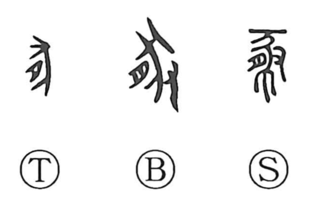

豚

Kun: buta, kobuta | On: ton
pig ・ swine
Explanation
This character joins the “flesh/meat” element 月 (nikuzuki) with 豕, the pictograph of a pig. It focuses on the pig’s belly—either the edible flesh itself or a sow heavy with young—thus presenting the animal as flesh. In bronze forms a hand 又 is added, showing pig meat being offered. Pigs, together with cattle, sheep, and dogs, were among the animals sacrificed to the gods.